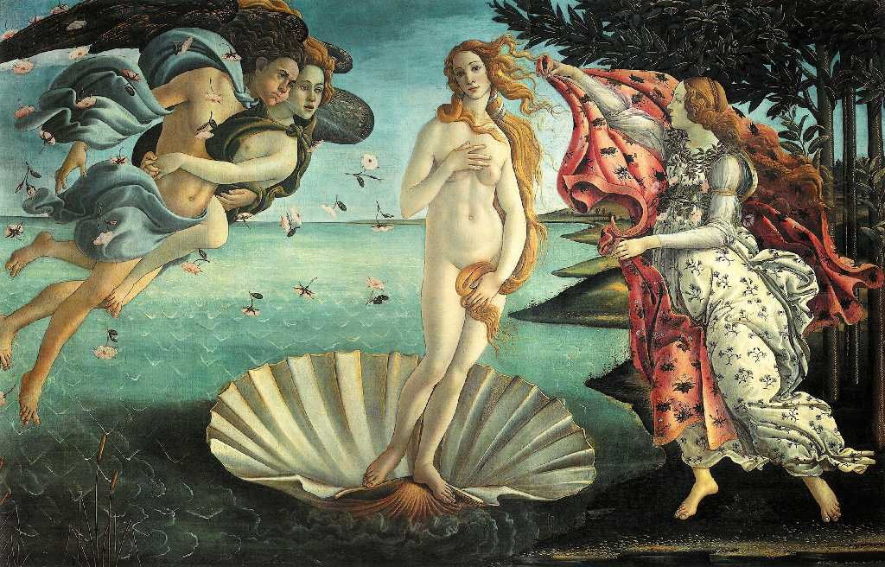
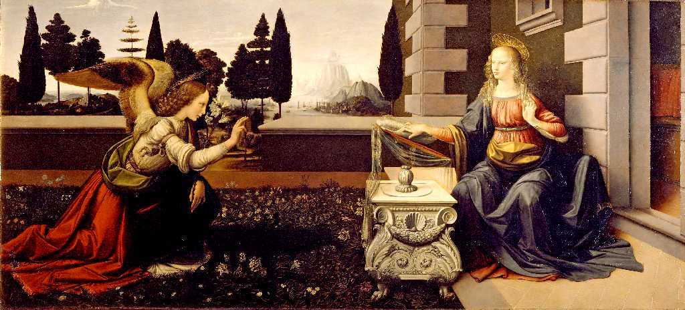
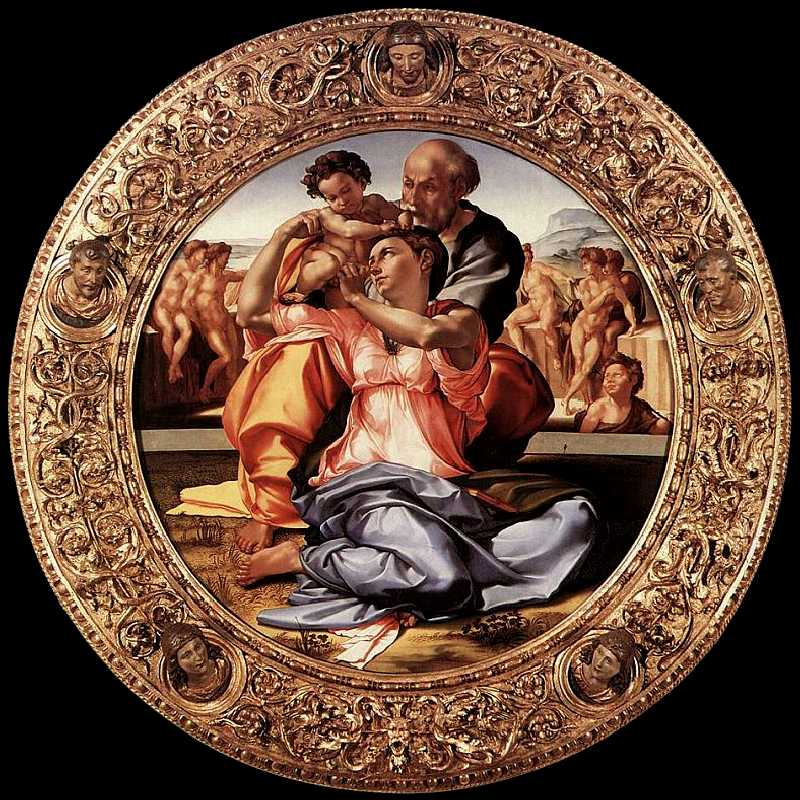

La Nascita di Venere Botticelli Galleria degli Uffizi
ウフィツィ美術館は１５９１年より公開されたヨーロッパ最古の美術館で質量ともにイタリア最大の美術館

Annunciazione Leonardo Da Vinci
レオナルドダヴィンチの受胎告知

Tondo Doni Michelangelo
ミケランジェロの聖家族
Galleria degli Uffizi